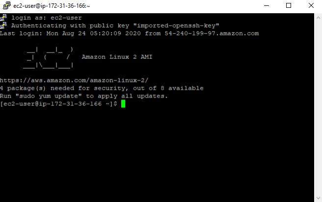

02-部署EC2
要完成本章节的实验，大概需要 10 分钟。
如果在我们的文字描述和截图中均未涉及的选项或者页面，取默认值即可。
本章节内容主要部署一个 EC2 实例（Linux）及使用不同的客户端连接（也是作为Lab1/2/4持续产生数据的客户端）。
配置安全组
EC2（Elastic Compute Cloud）是AWS云上的计算服务，此处我们主要配置安全组（允许谁可以连接），部署一个EC2，并远程连接上去，在这个EC2里面配置好AKSK即可。
通过如下方式打开EC2控制台
选择左侧菜单的“安全组”，在打开的页面中，选择“default”（即默认）安全组，然后选中“入站规则”，点击“编辑入站规则”
注意：我们严重不建议在生产环境中，把任何安全组做全开这种配置，这明显不符合安全最佳实践原则，此处仅供参考。
此处我们选择全部放开（极度极度极度的不推荐），主要是考虑到有些人可能是第一次使用AWS，所以我们没有遵循权限最小化原则（其实主要是放开ssh的22端口，mysql的3306端口以及redis的6379端口即可）
不要修改“出站规则”，保持默认值（全开）即可。
配置完的安全组“入站规则”如下（注意，不要去编辑“出站规则”，保持默认值即可）
部署EC2
EC2简单理解为AWS云上的虚拟机即可。打开EC2控制台
选择左侧菜单的“实例”，并点击“启动实例”（注意：如果你的控制台页面样子跟我们的截图不一样，请确认左上角的控制台版本选项）
Amazon Linux 2 简单理解为 CentOS 的 Amazon 版本。
选择AMI（Amazon Machine Image）类型为“Amazon Linux 2”，并确认架构为64位x86
机型选择t2.large或者t2.xlarge都可以（t3对应系列也可以，基本没什么负载，本着节俭的原则，选个2G以上内存的都可以满足需求）
实例配置这一页，全部默认
此处我们把这个EC2的根磁盘改成20G（默认8G，其实实验也够了，但是担心有人中间过程有错误，疯狂的打印错误日志导致根目录爆了，所以调整为20G），注意“终止时删除”的选项是选中的（默认值）
下一步标签页面，我们添加一个“键”为“Name”（注意大小写），“值”为“LinuxClient”的标签，供参考（标签可以不设置）
下一步配置安全组的时候，直接选择刚才修改过的安全组（default）即可
下一步审核页面可以确认下配置，然后直接点击“启动”，接下来会提示使用哪个密钥对（keypair）部署这个EC2，此处我们选择新建一个，并保存到本地（注意：也只有这一次可以保存，后续不能再下载了，如果要更换密钥很麻烦）
保存密钥并启动EC2
部署提交成功后，我们可以发现EC2已经开始交付，并获得对应的外网地址
此处EC2的外网地址为（如果手工停止Stop这个EC2，然后再启动Start这个EC2，这个外网IP地址会变，如果终止Terminate这个EC2，它就被删除了）
54.169.129.145
连接EC2
如果学员使用的是Windows系统，使用例如putty这样的客户端，则需要对刚才生成的密钥做个转换才可以连接部署出来的EC2。
Linux(Mac)客户端连接此EC2
因为我们已经放开了安全组权限，所以找到之前下载的密钥地址（如此处为 ~/Downloads/ ），把密钥权限改成400，然后就可以直接登录了（注意登录用户是ec2-user）
cd ~/Downloads/
chmod 400 kp-sin.pem
ssh -i kp-sin.pem ec2-user@54.169.129.145
登录后如下所示
Windows客户端连接此EC2
此章节大家也可以参考AWS官方文档
https://docs.aws.amazon.com/zh_cn/AWSEC2/latest/UserGuide/putty.html
此处我们需要使用到 putty（客户端）和 puttygen（转换密钥的工具），大家可以去官网下载
https://www.chiark.greenend.org.uk/~sgtatham/putty/
为了方便大家使用，我们已经给大家准备好了，可以直接从下面这里下载（Windows，64位）
下载好了以后，启动 puttygen.exe 文件，把下载的密钥key文件做个转换并保存。过程如下
1).在 Type of key to generate 下，选择 RSA：
2).选择 Load，选择在启动实例时指定的密钥对的 .pem 文件，然后选择 Open (打开)。PuTTYgen 会显示一个通知，指示已成功导入 .pem 文件。
3).为密钥指定您用于密钥对的相同名称（例如 kp-bdd-sin-com）并选择 Save (保存私钥)。PuTTY 会自动添加 .ppk 文件扩展名。
4).打开 putty.exe，输入EC2实例地址

配置key：
出现login as输入提示框的时候，输入：ec2-user，即可顺利登录EC2实例

配置EC2
此处只配置aksk并简单验证ec2具备对应权限。
登录EC2后，执行配置
aws configure
然后输入创建用户时获得的AKSK（或者打开下载的csv文件找到AKSK），以及对应的region（ap-southeast-1），然后执行权限测试命令
aws s3 ls
不会有任何返回，因为我们还没开始做实验，S3是空的，只要不报错，就表示配置是成功的。
恭喜你，已经完成第二步的实验准备工作。